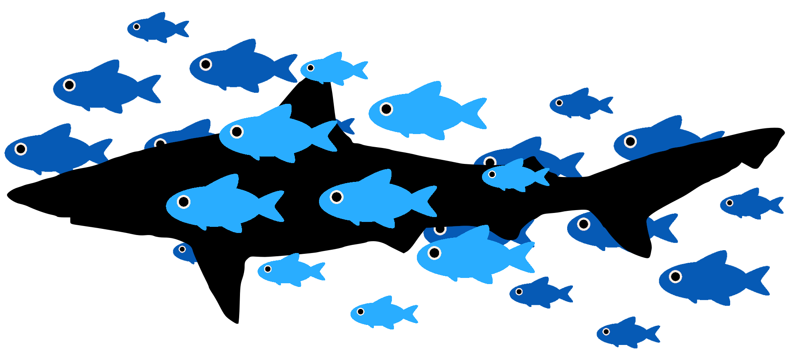

17 National animals exercise

In this chapter you'll be going through a set of challenges which will involves a file containing information on the national animals of different countries. It contains two columns; Country and National Animal. This dataset was found in kaggle.
Along with using the skills and knowledge you have gained you will also learn a few new things.
Some of the challenges have hidden tips (expandable boxes). For these exercises use the tip first before looking at the solution if you are having difficulty.
Please check the solution in the box even if your solution works. There are many ways to do the same thing in python and its good to see many different methods.
Create a new jupyter-notebook called "08-National_animals_challenges" to attempt the challenges.
17.1 NA challenge 1
Read in the file "national-animals.csv" in your "Python_course_data" directory. Then print the line "The national animal of <country> is the <animal>" for each line in the file.
#NAC1
#Read in the file using with statement
#If your jupyter notebook is in the same directory as the file you only need to provide the file name
with open("national-animals.csv", 'r') as input_file:
#Loop through the lines of input_file
for row in input_file:
#Set country and animal to variables using .split() method
country = row.split(",")[0]
animal = row.split(",")[1]
#Print function
print("The national animal of " + country + " is the " + animal)You will notice that there are spaces between the lines. This is because there is a newline character (\n) at the end of each line in the file. You can remove these with the method .strip(). It removes any leading (start of sentence) and trailing (end of sentence) white spaces (including \n). It's very useful to quickly clean the input from files.
Note: The .strip()method works on strings, not data from files. See the below solution for an example on how to use it.
#NAC1
#Read in the file using with statement
#If your jupyter notebook is in the same directory as the file you only need to provide the file name
with open("national-animals.csv", 'r') as input_file:
#Loop through the lines of input_file
#Can't strip input_file as it's aa file object
for row in input_file:
#Set country and animal to variables using .split() method
country = row.split(",")[0]
#Can strip the row variable as it is a string variable extracted from the file object
animal = row.strip().split(",")[1]
#Print function
print("The national animal of " + country + " is the " + animal)Ensure you use .strip() in this challenge and the next to remove the \n characters.
17.2 NA challenge 2

Read in the file "national-animals.csv". Then convert the data into a dictionary called "national_animals". Ensure the key is the country and the value is the animal.
Once created print the dictionary's contents.
Tip: You may be able to copy and edit the loop you made in the first challenge.
#NAC2
#Create empty dictionary
national_animals = {}
#Read in the file using with statement
with open("national-animals.csv", 'r') as input_file:
#Loop through the lines of input_file
for row in input_file:
#Set country and animal to variables using .split() method
country = row.split(",")[0]
animal = row.strip().split(",")[1]
#Set key and value
national_animals[country] = animal
#Print dictionary
print(national_animals)You may have noticed that the first pair is 'Country': 'National Animal'. This is the header of the file and we do not want to keep it.
There are various ways to not include the header when reading in a file. One straightforward method is to create your data and then remove the header. This can be carried out in different ways for different data structures:
- List: Subset to only include all the values except the first one
- E.g
list = list[1:].
- E.g
- Dictionary: Use the
delkeyword to delete a pair.- E.g:
del dictionary[key].
- E.g:
Try this yourself or see the edited solution below.
#NAC2
#Create empty dictionary
national_animals = {}
#Read in the file using with statement
with open("national-animals.csv", 'r') as input_file:
#Loop through the lines of input_file
for row in input_file:
#Set country and animal to variables using .split() method
country = row.split(",")[0]
animal = row.strip().split(",")[1]
#Set key and value
national_animals[country] = animal
#Remove the pair from the header
del national_animals["Country"]
#Print dictionary
print(national_animals)What if you what to automate this so you don't have to manually enter the key from the first pair?
You can extract the first line of a file with the method .readline(). You can then get the string of the first column of the first line with:
This can then be used with del. I encourage you to attempt this before looking at the below solution.
#NAC2
#Create empty dictionary
national_animals = {}
#Read in the file using with statement
with open("national-animals.csv", 'r') as input_file:
#Loop through the lines of input_file
for row in input_file:
#Set country and animal to variables using .split() method
country = row.split(",")[0]
animal = row.strip().split(",")[1]
#Set key and value
national_animals[country] = animal
#Get key from first line
fstring = open("national-animals.csv", 'r').readline().strip().split()[0]
#Remove the pair from the header
del national_animals[fstring]
#Print dictionary
print(national_animals)There are many other ways to do this, but I will let you discover these yourself in your future python coding. You could also remove the header line with a text editor or bash before reading it in.
Ensure your dictionary "national_animals" does not have the header information before continuing.
17.3 NA challenge 3

Print out the national animals of the following countries:
- Bangladesh
- Nicaragua
- Marshall Islands
- Niger
Use the dictionary "national_animals" and carry out this challenge in one coding cell.
17.4 NA challenge 4
Create a list of the animals using the values from the dictionary "animals_list". Then print the list.
Additionally, create and print a set of the animals called "animals_set".
Tip: Looping through a dictionary will provide the key as the loop variable. This can be used to extract the value from the dictionary. You can try the example code below.
17.5 NA challenge 5

Carry out the below tasks with python coding.
- Print out the 5th to 7th animals in animals_list.
- Print out the first 3 animals in animals_list.
- Print out the last 5 animals in animals_list.
- Print out all the animals except the first 190 in animals_list.
- Print out all the animals except the last 180 in animals_list.
- How many more countries are there compared to the number of unique national animals?
#NAC5
#5 to 7
print(animals_list[4:7])
#First 3
print(animals_list[:3])
#Last 5
print(animals_list[-5:])
#All except first 190
print(animals_list[190:])
#All except last 180
print(animals_list[:-180])
#How many more countries compared to unique national animals
print(len(national_animals) - len(animals_set))17.6 NA challenge 6
Create a dictionary where the key is the animal and the value is the number of countries it is a national animal for. Call it "animal_popularity".
Print "animal_popularity".
You can count the number of times a string appears as value in a list with .count(). Try out the below code.
#NAC6
#Create empty dictionary
animal_popularity = {}
#Loop through animal set made in NAC4
for animal in animals_set:
#Count the number of times the animal appears in the animal list made in NAC4
animal_count = animals_list.count(animal)
#Add animal and count to animal_popularity dictionary
animal_popularity[animal] = animal_count
#Print
print(animal_popularity)17.7 NA challenge 7
This challenge is difficult. Please, try your best to make a solution before looking at my solution. You can solve this with what you the fuctions, methods, etcs that you learn tin this course. Optionally, I encourage you to search online for help, this is what normal day to day bioinformatics involves.
Using "animal_popularity" answer the question "What animal represents the most countries as their national animal?"
With this information print the statement "The most popular animal is the <animal> which represents <country count> countries as their national animal."
Do not simply look through the dictionary "animal_popularity". Create code that could be reused for any dictionary containing integer values.
First create 2 variables to then be used in a fo rloop. Use an if statement in your for loop.
#NAC7
#Set variable of highest count and most popular animal
highest_count = 0
most_popular_animal = ""
#Loop through animal set made in NAC4
for animal in animals_set:
#If statement checking if animal count is greater than highest_count
if animal_popularity[animal] > highest_count:
#Set highest_count and most_popular_animal to current info in loop
highest_count = animal_popularity[animal]
most_popular_animal = animal
#Print statement
print("The most popular animal is the " + most_popular_animal + " which represents " +
str(highest_count) + " countries as their national animal.")If you looked for help online you may have found the solution in the below box.
17.8 NA challenge 8
For the last challenge use the dictionary "animal_popularity" to write to a new file called "popular_national_animals.csv".
Make sure this file has the following features:
- The fields/columns are comma separated (
,). - The first line is the header with the following text: "Animal,popularity_count"
- There is a line for each animal with a count of 2 or more.
- An example line would be: "Pelican,2"
Add \n to the end of your file lines so each entry is on a new line.
#NAC8
#Create file, open for writing, and put into data stream
with open("popular_national_animals.csv", 'w') as output_file:
#Write header
output_file.write("Animal,popularitycount\n")
#Loop through animal set made in NAC4
for animal in animals_set:
#Determine if animal count is greater than 1
if animal_popularity[animal] > 1:
#Write line to file
output_file.write(animal + "," + str(animal_popularity[animal]) + "\n")17.9 National animals conclusion
Superlative! That is the end of the national animals exercise. Throughout it you have:
- Read in a file and created a dictionary with the data.
- Extracted values using the keys of a dictionary.
- Created a list from the values of a dictionary.
- Created a set from a list.
- Extracted values from a list.
- Created a dictionary with integer values.
- Discovered what is the most popular animal.
- Created a new file with the most popular animals.
One last set of exercises awaits you.